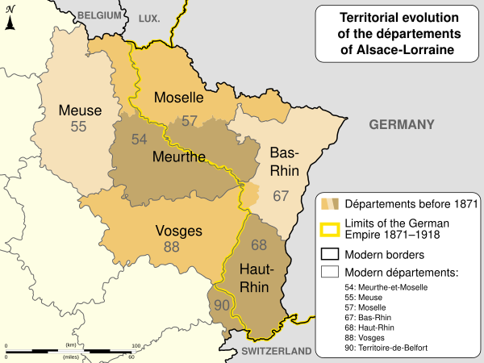
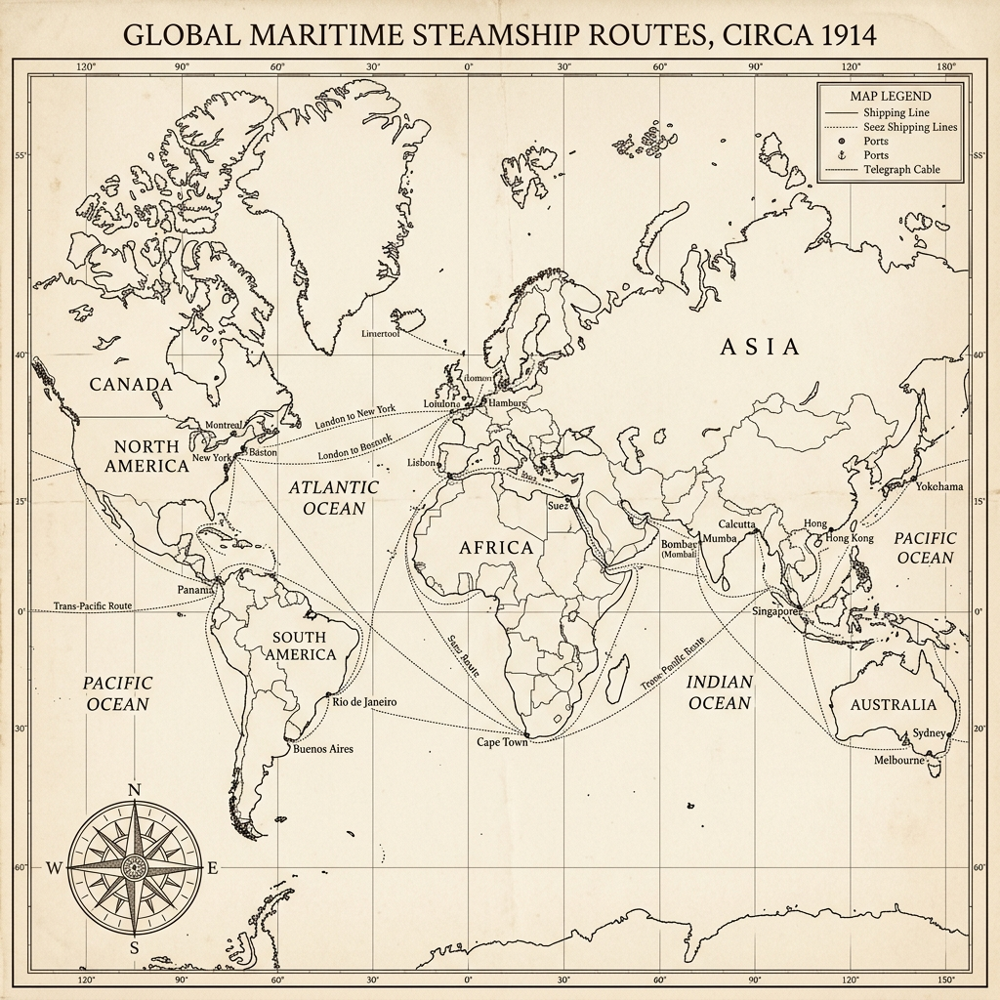
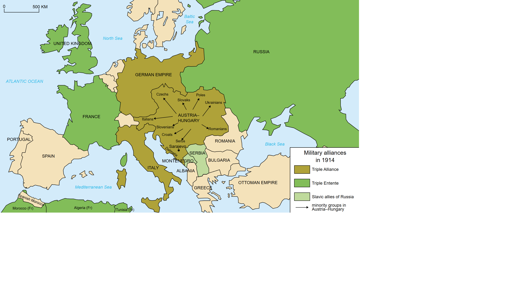
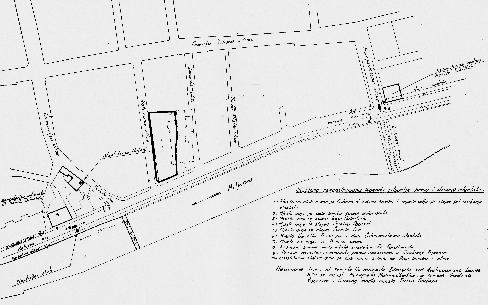

Complete Unit
KS3: Causes of the Great War
Course Textbook
Enquiry: How did decades of imperial rivalry and fear culminate in thirty days of madness?
Contents
|
Lesson 1: How was the German Empire created in 1871?
|
|
|
Lesson 2: How did the Franco-Prussian War create a lasting legacy of hatred?
|
|
|
Lesson 3: To what extent did the 'Scramble for Africa' increase tension in Europe?
|
|
|
Lesson 4: Why did a battleship building contest destroy Anglo-German relations?
|
|
|
Lesson 5: Did the Alliance System protect Europe or guarantee a global war?
|
|
|
Lesson 6: Why did a single assassination in Sarajevo ignite a World War?
|
|
|
Lesson 7: Assessment: The Causes of the Great War
|
|
L1: How was the German Empire created in 1871?[[SRC_MARKER:L0_Start]]
Learning Objectives
Understand how Otto von Bismarck used 'blood and iron' to unify the German states.
Analyze the geographical impact of the new German Empire on the balance of power in Europe.
Source S1: A map from 1871 showing the newly created German Empire compared to modern Germany.
This map illustrates the dramatic shift in European borders following the Franco-Prussian War in 1871. By uniting various independent German states into a single, massive German Empire under Prussian leadership, Otto von Bismarck completely altered the balance of power in Europe. This sudden creation of a massive, heavily armed, and highly industrialized powerhouse in the center of Europe deeply terrified its neighbors, setting the stage for future conflict.
Q1. Look at the A4 map provided. Why might the geographical location of the new German Empire cause fear for both Germany and its neighbors?
Vocabulary Check
Write a short paragraph using at least FOUR of the vocabulary words below correctly.
Chancellor | Blood and Iron
Today, Germany is one of the most powerful and successful industrial countries in Europe. But if you looked at a map of Europe in 1800, you would not find a country called "Germany" at all. Instead, you would see a messy patchwork of hundreds of small, independent states. In this lesson, you will discover the remarkable story of how a brilliant, ruthless statesman used "blood and iron" to crush his neighbours, unite these states, and create a brand-new superpower that would completely change the history of the world.
At the start of the 19th century, the German-speaking people were divided. In 1800, there were around 400 separate states making up what was known as the Holy Roman Empire, each with its own independent ruler. Following the Napoleonic Wars, these states were simplified and reduced to 39 states, forming a loose grouping known as the German Confederation in 1815.
Within this Confederation, the two largest and most powerful states—the Catholic empire of Austria and the militaristic kingdom of Prussia—constantly competed with each other for leadership.
In 1834, Prussia gained a massive economic advantage by setting up a free-trade customs union called the Zollverein. By removing internal customs barriers while keeping taxes on foreign imports, the Zollverein bound the smaller German states economically to Prussia while deliberately excluding Austria. Prussia had won the first round of the battle for dominance.
In 1862, a brilliant and fiercely conservative nobleman named Otto von Bismarck was appointed Chancellor of Prussia. Bismarck had a clear and single-minded goal: to exclude Austria from German affairs once and for all and unite the remaining German states under Prussian leadership.
Bismarck despised the slow, democratic methods of speeches and parliaments. In his very first speech as Chancellor, he warned the Prussian parliament of his plans:
>
"Germany is not looking to Prussia’s liberalism, but to her power... The great questions of the day will not be decided by speeches and resolutions of majorities... but by blood and iron."
By "blood," Bismarck meant the lives of soldiers; by "iron," he meant the advanced technology of Prussia’s military machine, including its modern railways, artillery, and rapid-firing guns. From the mid-nineteenth century, Prussia built up a massive, exceptionally well-trained, and highly disciplined army. Bismarck was ready to unleash it.
[[SRC_MARKER:L0_Task_2_0]]Q2. Interpreting 'Blood and Iron'. In your own words, explain what Otto von Bismarck meant when he said Germany would be united by 'blood and iron'. How did Prussia use its industrial and military power to prove Bismarck’s speech right between 1864 and 1871?
To unite Germany, Bismarck orchestrated three short, decisive wars over a seven-year period:
*
War 1: The Danish War (1864): Prussia teamed up with Austria to quickly defeat Denmark in a dispute over territory, showing off their military coordination.
*
War 2: The Austro-Prussian War (1866): Bismarck turned on his former ally, Austria. The modernized Prussian army crushed the Austrian forces in just seven weeks. Following this defeat, Austria was completely excluded from German affairs, leaving Prussia as the undisputed leader of the German states.
*
War 3: The Franco-Prussian War (1870–1871): To convince the southern German states (who were wary of Prussian dominance) to join his new union, Bismarck needed a common enemy. He cleverly provoked a war with France. The Prussian military machine invaded France, totally destroyed the French armies, and captured the French Emperor.
[[SRC_MARKER:L0_Task_3_0]]Q3. The Steps to Unification. Create a three-step staircase diagram in your book to show how Bismarck built the German Empire. For each step, write down: 1. The name of the country Prussia defeated. 2. The year of the war. 3. How this war helped Prussia achieve its ultimate goal of unification.
Having defeated France, Bismarck successfully united the remaining independent northern and southern German states into a single, massive German Empire (the Kaiserreich).
To add ultimate humiliation to France's defeat, Bismarck arranged for the King of Prussia, Wilhelm I, to be officially proclaimed the first German Emperor (Kaiser) on 18 January 1871 inside the Hall of Mirrors at the Palace of Versailles—the historic home of French kings.
As part of the peace treaty, Germany also seized Alsace-Lorraine, a highly valuable French industrial region rich in coal and iron. While Germany celebrated its spectacular unification, French citizens looked on with deep bitterness. This land grab created a furious, long-term rivalry between Germany and France that would eventually help spark the First World War forty years later.
Consolidation Task
[[SRC_MARKER:L0_Task_5_0]]Q4. Explain why Bismarck's policy of 'Blood and Iron' was successful in uniting Germany.
Pair & Share Activity
Q5. Discuss with your partner: Was the German Empire created 'from below' by the people or 'from above' by military force?
L2: How did the Franco-Prussian War create a lasting legacy of hatred?[[SRC_MARKER:L1_Start]]
Learning Objectives
Identify the penalties forced upon France in 1871.
Explain how the Ems Telegram sparked the Franco-Prussian War.
Evaluate the long-term impact on European relations.
Source S1: A painting by Anton von Werner from 1885 showing the Proclamation of the German Empire at Versailles.
This painting depicts the official birth of the unified German Empire inside the Hall of Mirrors at the Palace of Versailles in 1871. France was defeated and forced to host this ceremony in its own royal palace. This created a deep, lasting feeling of humiliation and anger in France, leading to a desire for revenge (revanche) that would eventually help spark WWI.
Q1. What are the two opposing figures doing in this 1871 painting by Anton von Werner, and why is this event significant?
Chronological Domino Flowchart
Task: The historical events below are out of order. Read them carefully, then use your pen to draw arrows connecting the boxes in the correct chronological and causal order (Event A ➔ Event B ➔ Event C...).
1907
Encirclement & Alliances
The Triple Entente System
1871
The Unification of Germany
The Franco-Prussian War
June 1914
The Spark in Sarajevo
The Assassination of the Archduke
1897
Imperial Rivalries
The Place in the Sun speech
1906
The Naval Arms Race
The Launch of HMS Dreadnought
1. Looking at this long-term timeline, which factor do you think was the most dangerous necessary cause of the war?
Vocabulary Check
Write a historically accurate sentence connecting two terms from the glossary box below.
Chancellor | Blood and Iron
Your Sentence:
[[SRC_MARKER:L1_Source_0]]
Source S2: Map A: Alsace-Lorraine Border Region (1871)

Simplified map showing Alsace-Lorraine on the border between France and the new German Empire.
Bismarck vs. Wilhelm: A Clash of Strategy
Following the crushing defeat of France in 1871, German Chancellor Otto von Bismarck understood that France would never forgive the loss of Alsace-Lorraine. His greatest fear was that France would form an alliance with another major European power"specifically Russia"which would force Germany to fight a devastating "two-front war" if conflict ever broke out.
To prevent this, Bismarck spent the next twenty years weaving a complex, dizzying web of alliances and secret treaties designed entirely to keep France diplomatically isolated. He formed the Triple Alliance with Austria-Hungary and Italy, and signed a secret Reinsurance Treaty with Russia. Bismarck's diplomatic genius lay in his ability to juggle these competing empires, ensuring that Germany always had more friends than enemies.
However, when a young, ambitious Kaiser Wilhelm II took the throne in 1888, he dismissed Bismarck and foolishly allowed the treaty with Russia to expire. Within years, Bismarck's nightmare became a reality: France and Russia signed a military alliance. The brilliant diplomatic safety net that Bismarck had built was gone, leaving Germany surrounded and forcing the German military to start planning for the exact scenario Bismarck had dreaded.
There was no country called Germany until 1871. Instead, central Europe was a fragmented collection of independent small states loosely joined only by language and local customs. The most powerful, heavily militaristic state among them was the northern kingdom of Prussia. Desiring to unite these states, Prussia's brilliant, ruthless Chancellor Otto von Bismarck first grouped the northern states into the
North German Confederation. To complete his dream of a single, mighty empire, Bismarck desperately needed the independent southern German states to unite with the north. He realized that nothing would unite these separate states faster than a shared national enemy.
[[SRC_MARKER:L1_Task_1_0]]Q2. To what extent did the maps of central Europe fundamentally change prior to 1871? Use the term "North German Confederation" in your answer.
Bismarck's opportunity arrived in July 1870, when King Wilhelm sent him a holiday dispatch describing a friendly meeting with the French ambassador. Bismarck carefully edited and shortened the text of this message—now famously known as the
Ems Telegram—before releasing it to the international press. The edited text read as though the Prussian King had explicitly insulted the French government. Horrified at this public blow to their national pride, France predictably declared war on 19 July 1870. Bismarck’s trap worked flawlessly: the independent southern German states immediately united behind Prussia.
[[SRC_MARKER:L1_Task_2_0]]Q3. Describe the diplomatic trick Chancellor Otto von Bismarck used to manufacture a war with France in 1870.
Prussia's military strategy relied on two distinct advantages. First, they utilized an
advanced railway network to mobilise and deploy 500,000 highly trained troops with astonishing speed. Second, they equipped their forces with
Krupp steel artillery, which fired much faster and further than French guns. The smaller French force of 180,000 was completely caught off guard. During the terrible Siege of Metz, the best French troops were entirely surrounded. When the remaining French forces attempted to break the lines at the Battle of Sedan on 1 September, they suffered 17,000 casualties and over 21,000 soldiers were captured—including the French Emperor Napoleon III. Following a brutal four-month winter siege of Paris, the capital surrendered on 28 January 1871.
[[SRC_MARKER:L1_Task_3_0]]Q4. Identify two distinct military advantages that allowed the Prussian-led German army to quickly defeat the conventional French forces.
The war permanently transformed the balance of power. In a final, agonizing humiliation for France, the German Empire was officially proclaimed inside the Hall of Mirrors at the Palace of Versailles—the historic home of French royalty. The peace treaty forced three severe penalties upon France: it ceded the strategic industrial border provinces of
Alsace-Lorraine, was forced to pay a crushing war fine of
5 billion francs over five years, and was forced to
host a German occupation army. This deep humiliation shattered French national pride and planted a bitter seed of resentment. Fearing eventual French revenge, German Field Marshal Alfred von Schlieffen began drawing up a military master plan in 1897 to quickly knock out France first if Germany ever faced a simultaneous war with Russia.
[[SRC_MARKER:L1_Task_4_0]]Q5. List the three severe penalties forced upon France by the victorious German Empire in the 1871 peace treaty.
Following the crushing defeat of France in 1871, German Chancellor Otto von Bismarck understood that France would never forgive the loss of Alsace-Lorraine. His greatest fear was that France would form an alliance with another major European power—specifically Russia—which would force Germany to fight a devastating "two-front war" if conflict ever broke out.
[[SRC_MARKER:L1_Task_5_0]]Q6. Explain why the loss of Alsace-Lorraine and the ceremony at Versailles created a long-term "nightmare" for European peace.
To prevent this, Bismarck spent the next twenty years weaving a complex, dizzying web of alliances and secret treaties designed entirely to keep France diplomatically isolated. He formed the Triple Alliance with Austria-Hungary and Italy, and signed a secret Reinsurance Treaty with Russia. Bismarck's diplomatic genius lay in his ability to juggle these competing empires, ensuring that Germany always had more friends than enemies.
However, when a young, ambitious Kaiser Wilhelm II took the throne in 1888, he dismissed Bismarck and foolishly allowed the treaty with Russia to expire. Within years, Bismarck's nightmare became a reality: France and Russia signed a military alliance. The brilliant diplomatic safety net that Bismarck had built was gone, leaving Germany surrounded and forcing the German military to start planning for the exact scenario Bismarck had dreaded.
Consolidation Task
[[SRC_MARKER:L1_Task_8_0]]Q7. Explain why the Franco-Prussian War created a lasting legacy of hatred between France and Germany.
Pair & Share Activity
Q8. Of the three penalties forced upon France in the 1871 treaty (loss of land, 5 billion franc fine, German occupation), which do you think caused the most bitter resentment, and why?
Historian's Corner: The 'Master Planner' Debate
Historians debate whether Bismarck was a genius 'master planner' who plotted the Franco-Prussian War years in advance, or merely a brilliant opportunist who reacted to events (like the Ems Telegram) as they happened. A.J.P. Taylor famously argued Bismarck just rode the wave of events.
Q9. How does A.J.P. Taylor's view of Bismarck as an 'opportunist' challenge the traditional narrative that the Franco-Prussian War was meticulously planned?
Q10. Evaluate how the change in leadership from Bismarck to Kaiser Wilhelm II fundamentally altered Germany's strategic position in Europe.
GCSE Exam Practice
Q11. How useful are Sources A and B for an enquiry into the reasons for French hatred of Germany after 1871?
“We must never forget the humiliation of 1871. The German Empire was proclaimed in our own Palace of Versailles, tearing away the bleeding wounds of Alsace and Lorraine. They have stolen our iron and our factories, and forced us to pay a crushing ransom of 5 billion francs. Every French child must grow up with one single thought: to rebuild our army and take back what was stolen from the motherland.”
Source A: Adapted from a French school textbook, published in Paris, 1885.
“France will never forgive us for taking Alsace-Lorraine. The peace we have forced upon them has left a bitter resentment that will not fade. We must accept that a French war of revenge is a certainty in the future. Therefore, our entire diplomatic focus must be to ensure she never finds an ally to help her take it back. As long as France remains diplomatically isolated, particularly from Russia, Germany will remain secure.”
Source B: Adapted from a private letter written by German Chancellor Otto von Bismarck to a fellow diplomat, 1872.
L3: To what extent did the 'Scramble for Africa' increase tension in Europe?[[SRC_MARKER:L2_Start]]
Learning Objectives
Identify the main European colonial powers and their territories.
Explain how Kaiser Wilhelm II's 'Place in the Sun' policy threatened Britain.
Evaluate the impact of the Moroccan Crises on the Entente Cordiale.
Source S1: A political cartoon by John Tenniel from 1885 showing German Chancellor Otto von Bismarck as a greedy boy.
This British cartoon satirizes Germany's Chancellor Otto von Bismarck as a "greedy boy" grabbing slices of a pudding that represents colonial territories in Africa and New Guinea. This reflects British anxiety and suspicion about Germany's aggressive efforts to build a global empire, which threatened Britain's status as the world's leading power.
Q1. Look closely at the man standing over Africa. What is his posture suggesting about imperial ambitions?
Do Now Activity
1. Who was the first Emperor of the newly unified Germany in 1871?
2. Which brilliant Chancellor united the German states?
3. Which country was humiliatingly defeated in the Franco-Prussian War?
4. What strategic border territory did Germany take in 1871?
5. What is the French word for their desire for revenge?
6. Explain how Bismarck used the Ems Telegram to trap France into a war.
7. Detail the two military advantages the Prussian army possessed.
8. Why was the location of the German Empire's proclamation so humiliating for France?
9. Why did Bismarck weave a complex web of secret alliances after 1871?
10. What was Bismarck's ultimate nightmare scenario?
Vocabulary Check
Write a clear definition and a historically accurate sentence for the term: Imperialism
[[SRC_MARKER:L2_Source_0]]
Source S2: Map A: Partition of Africa (1914)

[[SRC_MARKER:L2_Source_1]]
Source S3: Map B: The Global Imperial Lanes

The Gamble of Weltpolitik
In 1905, the Kaiser arrived in Tangier, Morocco, declaring his support for Moroccan independence against French influence. He expected the Entente Cordiale to fracture under pressure. Instead, the exact opposite happened: at the Algeciras Conference in 1906, Britain firmly backed France, leaving Germany diplomatically humiliated and isolated, supported only by Austria-Hungary.
The Kaiser repeated this dangerous gamble in 1911 (the Agadir Crisis) by sending the gunboat SMS Panther to the Moroccan coast. Once again, Britain stood by France, and the British navy was even placed on a war footing. Wilhelm’s clumsy attempts at 'gunboat diplomacy' completely backfired. Rather than breaking the Entente Cordiale, his aggression convinced Britain and France that Germany was an unpredictable threat, pushing the two nations into a much tighter military partnership.
By the turn of the 20th century, the Great Powers of Europe were locked in a fierce, competitive race to conquer and maintain overseas empires. Colonies had become vital status symbols of industrial wealth and global importance. Each territory provided cheap raw materials to feed the factories of the ruling nation, while simultaneously serving as locked-down markets to purchase the home country's manufactured goods. This race had been formalized at the
1884 Berlin Conference, where European leaders partitioned Africa among themselves without consulting any Africans. Among the territories partitioned, the
Congo Free State stood out as a site of extreme exploitation, owned personally by King Leopold II of Belgium.
[[SRC_MARKER:L2_Task_1_0]]Q2. Explain two distinct economic reasons why possessing overseas colonies was vital to the industrial growth of a Great Power.
Great Britain possessed the vastest overseas empire in human history. Because Great Britain was an island nation, its entire imperial network relied heavily on open sea routes. Thousands of British merchant ships sailed the oceans daily, and the Royal Navy was given absolute priority to keep these global sea lanes clear of foreign rivals. Crucially, Britain controlled the
Suez Canal in Egypt to secure its vital shipping lanes to India. Any challenge to this naval dominance was viewed by British politicians as a direct threat to the survival of the British Empire. France held the second-largest empire, focusing heavily on territories in North and West Africa. Having suffered the bitter humiliation of losing Alsace-Lorraine to Germany in 1871, French politicians fiercely guarded their colonies to protect their remaining international reputation. However, imperial expansion was fraught with danger; in 1898, Britain and France nearly went to war during the
Fashoda Incident, a tense military standoff over control of the Upper Nile in Sudan.
[[SRC_MARKER:L2_Task_2_0]]Q3. Why did French politicians feel it was absolutely vital to maintain a firm hold on their remaining global colonies after 1871?
The entire geopolitical landscape destabilized when Germany entered the race. Having only unified in 1871, Germany was a new nation right in the middle of Europe, but its industry was growing rapidly. The ambitious German Kaiser Wilhelm II and his politicians wanted Germany to match the global influence of Britain and France. In a fiery speech to the German parliament on 6 December 1897, Foreign Secretary Bernhard von Bülow announced that Germany would no longer stand aside, famously demanding Germany’s own "place in the sun".
Germany rapidly seized territories across the globe, including the Cameroons, East Africa, Togo, and the Pacific colony of
Kaiser-Wilhelmsland in Papua New Guinea. This aggressive push led to direct clashes. In 1911, the
Agadir Crisis erupted when Germany sent a gunboat, the
SMS Panther, to the Moroccan port of
Agadir in an attempt to challenge French influence. The standoff ended when Germany recognized
France as the protector of Morocco in exchange for minor territories in the Congo. To hold and defend this new empire, German politicians announced plans to construct a massive battle fleet. This move deeply alarmed Great Britain. British politicians regarded Germany’s colonial and naval ambitions as an aggressive attempt to undermine the British Empire, while German leaders increasingly viewed Britain as a hostile obstacle standing in the way of Germany’s legitimate right to historical greatness.
[[SRC_MARKER:L2_Task_4_0]]Q4. Explain how Germany’s sudden desire to build a naval fleet to protect its new colonies acted as a cause of friction with Great Britain.
[[SRC_MARKER:L2_Task_4_1]]Q5. What specific geographical territory did Foreign Secretary Bernhard von Bülow target when he demanded a "place in the sun" for Germany?
In 1904, Britain and France ended centuries of bitter rivalry by signing the Entente Cordiale, a friendly agreement to resolve colonial disputes. Kaiser Wilhelm II of Germany was furious; he believed this friendship was designed to encircle Germany. To test the strength of this new bond, the Kaiser decided to deliberately provoke a crisis in North Africa, assuming the British would not actually risk war to defend French interests.
In 1905, the Kaiser arrived in Tangier, Morocco, declaring his support for Moroccan independence against French influence. He expected the Entente Cordiale to fracture under pressure. Instead, the exact opposite happened: at the Algeciras Conference in 1906, Britain firmly backed France, leaving Germany diplomatically humiliated and isolated, supported only by Austria-Hungary.
The Kaiser repeated this dangerous gamble in 1911 (the Agadir Crisis) by sending the gunboat SMS Panther to the Moroccan coast. Once again, Britain stood by France, and the British navy was even placed on a war footing. Wilhelm’s clumsy attempts at 'gunboat diplomacy' completely backfired. Rather than breaking the Entente Cordiale, his aggression convinced Britain and France that Germany was an unpredictable threat, pushing the two nations into a much tighter military partnership.
Consolidation Task
[[SRC_MARKER:L2_Task_9_0]]Q6. Explain how the 'Scramble for Africa' increased tension between European powers.
Pair & Share Activity
Q7. If you were a British politician in 1897, would you view Kaiser Wilhelm's 'Place in the Sun' speech as a direct threat, or just a young leader showing off? Why?
Historian's Corner: The Primat der Innenpolitik
Some historians (like Eckart Kehr) argue that Wilhelm II's aggressive Weltpolitik was actually driven by domestic politics. By creating foreign enemies, the Kaiser hoped to distract the German working class from voting for socialist parties at home.
Q8. Explain how Eckart Kehr's theory connects Germany's aggressive foreign policy to its internal fears of a socialist revolution.
Q9. Explain why Kaiser Wilhelm's strategy of testing the Entente Cordiale during the Moroccan Crises was a massive strategic failure for Germany.
GCSE Exam Practice
Q10. How useful are Sources A and B for an enquiry into the impact of Weltpolitik on international relations?

Source A: Source A: 'The Greedy Boy', a British political cartoon published in 1885 showing German Chancellor Otto von Bismarck.
“We do not want to put anyone in the shade, but we too demand our place in the sun.”
Source B: Speech by German Foreign Minister Bernhard von Bülow to the Reichstag, 1897.
L4: Why did a battleship building contest destroy Anglo-German relations?[[SRC_MARKER:L3_Start]]
Learning Objectives
Identify the significance of the HMS Dreadnought.
Explain the concept of the Two-Power Standard and Risk Theory.
Analyze how naval competition fed mutual suspicion.
Source S1: An official technical blueprint from 1906 showing the revolutionary design of HMS Dreadnought.
This is a technical naval diagram of HMS Dreadnought, a revolutionary British battleship launched in 1906. It was so fast and heavily armed that it instantly made all existing warships in the world obsolete (useless). This triggered a frantic naval arms race between Britain and Germany, as both countries rushed to build as many Dreadnoughts as possible.
Q1. This blueprint represents the HMS Dreadnought. Why would this ship make all other navies obsolete?
Do Now Activity
1. What was the name of Kaiser Wilhelm II's aggressive foreign policy?
2. Explain how Wilhelm II's actions during the Moroccan Crises backfired on Germany.
3. Why was the Franco-Russian Alliance a strategic disaster for Germany?
4. Evaluate how the 'Scramble for Africa' increased tensions in Europe.
5. Describe the impact of Britain abandoning its policy of 'Splendid Isolation'.
6. Evaluate the role of Wilhelm II's personality in destabilizing Europe.
7. Who dismissed Otto von Bismarck in 1890?
8. What strategic territory did Germany take from France in 1871?
9. Why did Bismarck weave a complex web of secret alliances after 1871?
10. What was Bismarck's ultimate nightmare scenario?
Vocabulary Check
Fill in the blanks using the vocabulary words below.
Dreadnought | Arms Race | Two-Power Standard | Naval Supremacy
Britain's traditional was challenged when Germany began a rapid naval buildup. This sparked a fierce between the two nations. Britain relied on the to maintain a massive fleet, but the invention of the heavily-armed battleship reset the competition.
[[SRC_MARKER:L3_Source_0]]
Source S2: Map A: The North Sea & Naval Chokepoints

The Naval Race: A Self-Fulfilling Prophecy?
The HMS Dreadnought was a technological marvel. It was faster, heavily armored, and carried ten massive 12-inch guns, making every other battleship on earth instantly obsolete. While the Dreadnought was a triumph of British engineering, it contained a fatal strategic flaw: because all older ships were now worthless, Britain's massive head start in naval numbers was suddenly wiped out.
Germany recognized the opportunity immediately. The naval race was no longer about total ships, but about who could build the most 'Dreadnought-class' vessels. By revolutionizing naval warfare, Britain had essentially hit the reset button on the arms race, giving Germany a realistic chance to challenge British naval supremacy from scratch. The ensuing desperate scramble to build Dreadnoughts consumed the budgets and political rhetoric of both nations up until 1914.
For nearly a century following the Battle of Trafalgar in 1805, Great Britain had ruled the world's oceans without any major international challenge, possessing the most powerful navy on earth. As an island nation with a massive global empire, Britain relied on its naval supremacy to protect its trade routes, secure resource lifelines, and defend its home shores from European threats. To maintain this supremacy, Britain adhered to the
Two-Power Standard, a strict naval policy stating that the Royal Navy must always be at least equal to or larger than the next two most powerful navies in the world combined.
[[SRC_MARKER:L3_Task_1_0]]Q2. Describe the 'Two-Power Standard' and explain why Great Britain adhered to this strict naval policy.
Everything changed fundamentally in 1898 when Germany's new emperor, Kaiser Wilhelm II, announced his clear intention to build a powerful German navy. The Kaiser believed that if Germany was ever to become a true world power, it had to explicitly challenge the global dominance of the British fleet. In 1898 and 1900, the German government passed the historic German Navy Laws, which ordered the rapid construction of a massive fleet, including 19 battleships in the first law and an additional 38 in the second. To back this policy, the German naval chief, Admiral Tirpitz, established the Navy League. This massive organization arranged civilian tours of industrial shipyards and delivered public lectures across Germany to stimulate intense public interest and build a fierce sense of patriotism among ordinary citizens.
[[SRC_MARKER:L3_Task_2_0]]Q3. Detail what the German Navy Laws of 1898 and 1900 explicitly ordered the German industrial shipyards to construct.
[[SRC_MARKER:L3_Task_2_1]]Q4. Explain how Admiral Tirpitz used the Navy League to manufacture civilian support and patriotism for Germany's expanding fleet.
[[SRC_MARKER:L3_Task_2_2]]Q5. Explain why maintaining a massive navy was a matter of survival for Great Britain, but was viewed as a matter of status and power for Germany.
British politicians were profoundly alarmed by Germany's actions. They believed that Germany's expanding High Seas Fleet was being designed specifically for a future military conflict with the British Grand Fleet. To explain the danger, British politicians pointed out the fundamental difference in each nation's security needs.
Britain's defensive response was to design and construct the most powerful warship ever created: HMS
Dreadnought. Launched in 1906, this vessel was so advanced in its speed, armor plating, and long-range rotating turrets that every existing battleship on earth was rendered instantly obsolete overnight. Rather than stopping the competition, HMS
Dreadnought inadvertently reset the score to zero, giving Germany a chance to compete on equal terms. Germany immediately responded by manufacturing its own version of the battleship, the
SMS Rheinland. The naval arms race was officially underway, with both nations building more and more of these massive, expensive weapons. By 1914, Germany had successfully doubled the size of its navy to become the second-largest naval power in the world, leaving Britain deeply suspicious of its motives.
[[SRC_MARKER:L3_Task_4_0]]Q6. Identify three specific technological features of HMS Dreadnought that made it superior to all previous warships.
This competitive race culminated in a highly strategic naval standoff. The British Grand Fleet was stationed at its primary home base at Scapa Flow in Scotland, while the German High Seas Fleet was based at Wilhelmshaven on the North Sea coast. Both fleets expected a massive, decisive battle in the North Sea. To facilitate the rapid movement of its massive new dreadnoughts between the Baltic Sea and the North Sea, Germany widened the Kiel Canal, completing the project in 1914 just before the outbreak of war.
Before 1906, Britain ruled the waves with a policy known as the 'Two-Power Standard'—a rule stating the Royal Navy must be at least as large as the next two biggest navies combined. Germany, despite passing ambitious Naval Laws under Admiral von Tirpitz, was struggling to catch up. But in 1906, Britain launched a ship that accidentally leveled the playing field.
The HMS Dreadnought was a technological marvel. It was faster, heavily armored, and carried ten massive 12-inch guns, making every other battleship on earth instantly obsolete. While the Dreadnought was a triumph of British engineering, it contained a fatal strategic flaw: because all older ships were now worthless, Britain's massive head start in naval numbers was suddenly wiped out.
Germany recognized the opportunity immediately. The naval race was no longer about total ships, but about who could build the most 'Dreadnought-class' vessels. By revolutionizing naval warfare, Britain had essentially hit the reset button on the arms race, giving Germany a realistic chance to challenge British naval supremacy from scratch. The ensuing desperate scramble to build Dreadnoughts consumed the budgets and political rhetoric of both nations up until 1914.
[[SRC_MARKER:L3_Task_8_0]]Q7. Explain how the launching of HMS Dreadnought in 1906 represented an industrial turning point in the naval arms race, rather than maintaining the status quo.
Consolidation Task
[[SRC_MARKER:L3_Task_9_0]]Q8. Explain why the naval race between Britain and Germany damaged their relations.
Pair & Share Activity
Q9. Who do you think was more to blame for the naval arms race: Germany for building a fleet they didn't strictly need, or Britain for refusing to share control of the seas?
Historian's Corner: The Anglo-German Antagonism
Paul Kennedy argues that the naval arms race was the single most decisive factor in turning Britain from a neutral observer into Germany's enemy, as the threat of a German navy fundamentally challenged Britain's core survival strategy.
Q10. Evaluate Paul Kennedy's argument. Why would Britain view a German naval buildup as a greater existential threat than a larger German army?
Q11. How did the invention of the HMS Dreadnought ironically endanger British naval supremacy despite being a British invention?
GCSE Exam Practice
Q12. How useful are Sources A and B for an enquiry into the effects of the Anglo-German naval arms race?

Source A: Official technical blueprint of HMS Dreadnought, 1906.
“We want eight, and we won't wait!”
Source B: Popular British political slogan chanted by the public in 1909.
L5: Did the Alliance System protect Europe or guarantee a global war?[[SRC_MARKER:L4_Start]]
Learning Objectives
Identify the members of the Triple Alliance and the Triple Entente.
Explain why countries felt the need to form secret defensive treaties.
Evaluate how the alliance system could drag all of Europe into a regional conflict.
Source S1: An American political cartoon from July 1914 showing the chain reaction of the European alliance system.
This cartoon vividly illustrates the terrifying domino effect of the European alliance system. Following the assassination in Sarajevo, the rigid network of treaties dragged all the major powers into war. Serbia is threatened by Austria-Hungary, who is threatened by Russia, who is threatened by Germany, and so on. The alliances, which were theoretically designed to prevent war by acting as a deterrent, instead acted as tripwires that guaranteed a localized dispute would instantly explode into a continent-wide conflict.
Q1. Study the intertwined hands and figures in this cartoon. What does it suggest about how a local conflict might spread?
Do Now Activity
1. What revolutionary British battleship was launched in 1906?
2. What was the 'Two-Power Standard'?
3. Why did Germany feel it needed a massive high seas fleet?
4. Explain how the invention of the Dreadnought ironically hurt British supremacy.
5. What was the popular British slogan chanted by the public in 1909?
6. Why did Britain feel their survival depended on massive naval supremacy?
7. How did the Anglo-German naval race make war more likely?
8. What was the name of Kaiser Wilhelm II's aggressive foreign policy?
9. Explain how Wilhelm II's actions during the Moroccan Crises backfired on Germany.
10. Evaluate how the 'Scramble for Africa' increased tensions in Europe.
Vocabulary Check
Write a historically accurate sentence connecting two terms from the glossary box below.
Triple Entente | Triple Alliance | Reinsurance Treaty | Encirclement
Your Sentence:
[[SRC_MARKER:L4_Source_0]]
Source S2: Diagram A: The Alliance System (1914)
The complex web of treaties that dragged Europe into a global war.
[[SRC_MARKER:L4_Source_1]]
Source S3: Map A: European Military Alliance Blocs (1914)

Q2 Enquiry: Look at the geographical position of Germany and Austria-Hungary. Why would they feel encircled by the Triple Entente? (See Textbook Page 24)
The Powder Keg: Nationalism vs. Empire
This 'Blank Check' is one of the most debated actions in modern history. Some historians argue the Kaiser was acting out of impulsive loyalty to his murdered friend, not expecting the crisis to escalate beyond a localized Balkan war. They point to the fact that Wilhelm went on a sailing cruise immediately after giving the promise, suggesting he did not believe a global conflict was imminent.
However, other historians argue that the German High Command deliberately used the 'Blank Check' to push Austria into war. Knowing that Russia's military was rapidly modernizing and would soon be too powerful to defeat, German generals believed that if a European war was inevitable, it was better to fight it in 1914 rather than wait. By giving Austria unconditional support, Germany ensured the crisis would explode into a continental conflict.
As European empires expanded and resources grew tightly contested, nations looked for ways to keep themselves safe from sudden attack by their rivals. The primary strategy chosen by European monarchs and statesmen was the construction of binding military alliances. Gradually, over several decades, Europe was carved up into two massively armed, opposing camps.
By 1907, the European alliance system had solidified into two balanced groups. On one side stood the
Triple Alliance, consisting of the central European bloc of Germany, Austria-Hungary, and Italy. On the opposing side sat the
Triple Entente, uniting Great Britain, France, and Russia. At the time, contemporary newspapers and diplomats argued that this delicate division of power would successfully maintain world peace. The logic was simple: going to war with any single member of an alliance meant triggering an immediate, terrible war against the entire opposing bloc. No statesman, they believed, would be reckless enough to initiate such a disaster.
[[SRC_MARKER:L4_Task_2_0]]Q3. Identify the specific member countries that made up the Triple Alliance and the Triple Entente by 1907.
[[SRC_MARKER:L4_Task_2_1]]Q4. Explain the diplomatic logic of how the alliance system was theoretically supposed to keep European nations safe from a outbreak of war.
However, the alliance system did not create a sense of safety; instead, it bred intense suspicion and paranoia. The German Kaiser and his military planners viewed the Triple Entente not as a peaceful defensive bloc, but as a hostile circle of enemies designed to trap them. Historians note that from the German perspective, this amounted to a deliberate policy of
encirclement meant to block Germany’s legitimate right to become a global power. Crucially, the German High Command and Austria-Hungary's Chief of the General Staff,
Conrad von Hötzendorf (who repeatedly advocated for a preventive war to crush Serbia), believed that a massive European war was
inevitable. They feared that Russia's rapid industrialization and military growth would soon overwhelm Germany, making a preventative war necessary before Russia became too powerful. This deep-seated fear reinforced the necessity of the Schlieffen Plan—to aggressively smash France first before the massive Russian army could fully mobilise to attack from the east.
[[SRC_MARKER:L4_Task_3_0]]Q5. According to Germany's military leaders, explain why a European war was considered "inevitable and necessary" rather than avoidable.
Concurrently, the nature of war was becoming highly industrialization-driven. All the Great Powers utilized their factories to engage in a massive land-based arms race. Between 1906 and 1914, steel production in Germany skyrocketed to over 17 million tonnes, vastly outpacing Britain and France combined, to forge heavy artillery and armaments. Millions of kilometers of railway tracks were laid down across the continent for a single strategic purpose: to move hundreds of thousands of uniformed soldiers to the front lines within hours of a crisis breaking out. By 1914, Europe had been transformed into a volatile, high-density powder keg where any single local spark would automatically pull all the Great Powers into a total global slaughter.
[[SRC_MARKER:L4_Task_4_0]]Q6. Detail how the massive expansion of steel production and railway tracks across Europe altered the speed and scale of army mobilization.
[[SRC_MARKER:L4_Task_4_1]]Q7. Explain how the transformation of Europe into two "armed camps" by 1914 represented a dangerous change in international relations compared to the traditional balance of power.
Use the IDEA framework to structure your response.
Following the assassination of Archduke Franz Ferdinand, Austria-Hungary wanted to crush Serbia but feared Russian intervention. To proceed safely, Austria needed a guarantee of German support. On July 5th, 1914, Kaiser Wilhelm II issued what historians call the 'Blank Check'—an unconditional promise that Germany would stand by Austria-Hungary, even if their actions provoked a war with Russia.
This 'Blank Check' is one of the most debated actions in modern history. Some historians argue the Kaiser was acting out of impulsive loyalty to his murdered friend, not expecting the crisis to escalate beyond a localized Balkan war. They point to the fact that Wilhelm went on a sailing cruise immediately after giving the promise, suggesting he did not believe a global conflict was imminent.
However, other historians argue that the German High Command deliberately used the 'Blank Check' to push Austria into war. Knowing that Russia's military was rapidly modernizing and would soon be too powerful to defeat, German generals believed that if a European war was inevitable, it was better to fight it in 1914 rather than wait. By giving Austria unconditional support, Germany ensured the crisis would explode into a continental conflict.
Consolidation Task
[[SRC_MARKER:L4_Task_8_0]]Q8. Explain how the Alliance System contributed to the outbreak of the First World War.
Pair & Share Activity
Q9. Imagine you are an ordinary Serbian citizen in 1908. Why would Austria-Hungary's aggressive takeover of Bosnia make you feel personally threatened?
Historian's Corner: The 'Powder Keg' Inevitability
Was war inevitable in the Balkans? Richard Evans argues that the complex alliance system turned the Balkans into a doomsday machine, where any small conflict was mathematically guaranteed to drag all the Great Powers into a general war.
Q10. Do you agree with Richard Evans that war was "inevitable" in the Balkans, or could diplomacy have dismantled the "doomsday machine"?
Q11. Was the 'Blank Check' a reckless mistake by the Kaiser, or a calculated move by the German military to trigger a necessary war? Use historical reasoning to justify your stance.
GCSE Exam Practice
Q12. How useful are Sources A and B for an enquiry into the threat posed by Serbia to Austria-Hungary?

Source A: Map of the Balkans showing the borders of Serbia and the Austro-Hungarian Empire in 1914.
“Serbia is a viper that must be crushed. If we do not destroy them now, our empire will be torn apart by Slavic nationalism.”
Source B: Diary entry of the Austro-Hungarian Chief of Staff, Conrad von Hötzendorf, 1913.
L6: Why did a single assassination in Sarajevo ignite a World War?[[SRC_MARKER:L5_Start]]
Learning Objectives
Identify the events of 28 June 1914.
Explain how the assassination triggered the alliance system.
Analyze whether the resulting war was inevitable or accidental.
Source S1: A British political cartoon by Leonard Raven-Hill from 1912 showing European leaders sitting on the boiling Balkans.
This famous cartoon represents the Balkans region as a boiling pot of ethnic and nationalistic tensions. The leaders of the European Great Powers (Britain, Germany, France, Russia, Austria-Hungary) are shown sitting on the lid, struggling to prevent the pot from exploding into a major European war.
Q1. Look at the men sitting on the 'Balkan Troubles' pot. What are they desperately trying to prevent?
Do Now Activity
1. Which three countries made up the Triple Entente?
2. Which three countries made up the Triple Alliance?
3. Explain the theoretical logic of how the alliance system was supposed to keep peace.
4. Why did the alliance system actually increase paranoia instead of security?
5. What military plan did Germany create to avoid a long two-front war?
6. Which neutral country did the Schlieffen Plan require invading?
7. What feeling of being surrounded by enemies haunted German planners?
8. What revolutionary British battleship was launched in 1906?
9. Explain how the invention of the Dreadnought ironically hurt British supremacy.
10. How did the Anglo-German naval race make war more likely?
Vocabulary Check
Write a clear definition and a historically accurate sentence for the term: Assassination
[[SRC_MARKER:L5_Source_0]]
Source S2: Diagram A: The July Crisis Domino Effect

How a single assassination in the Balkans escalated into a world war within a month.
[[SRC_MARKER:L5_Source_1]]
Source S3: Map A: The Balkan Peninsula (1914)
Simplified map of the highly unstable Balkan Peninsula in 1914.
[[SRC_MARKER:L5_Source_2]]
Source S4: Map B: Inset - Sarajevo, 28 June 1914: The Fatal Route

The region of south-east Europe known as the Balkans had once been ruled securely by the Turkish Ottoman Empire. However, as Turkish power weakened across the 19th and early 20th centuries, the Ottoman Empire lost control. Different Balkan states began fiercely demanding their own independence, sparking a series of local Balkan Wars that left the entire area a hotbed of hatred, suspicion, and aggressive militarism.
For the neighboring empire of Austria-Hungary, this
Pan-Slavism was an absolute nightmare. Austria-Hungary was a vast empire containing many different nationalities who wanted independence. Its politicians deeply feared that if Serbian nationalism rose unchecked, the millions of Serbs living inside the Austro-Hungarian borders would rebel, causing the entire empire to collapse. Tensions exploded in 1908 when Austria officially
annexed the provinces of Bosnia and Herzegovina, directly absorbing thousands of furious Serbs into its territory. In response, a group of radical Serbian army officers formed a secret terrorist society dedicated to uniting all Serbs by force: the Black Hand.
[[SRC_MARKER:L5_Task_1_0]]Q2. Explain why the rise of independent Balkan states and Serbian nationalism represented a catastrophic nightmare for the Austro-Hungarian Empire.
By June 1914, the Balkan powder keg was ready to blow. To show the rebellious Serbs who was boss, the heir to the Austro-Hungarian throne, Archduke Franz Ferdinand, scheduled a high-profile state visit to Sarajevo, the capital of Bosnia. The date chosen was June 28—the sacred national day of the Serbian people. Thanks to extensive press publicity, the Black Hand knew exactly where the Archduke's open-top car would drive along the river-front Appel Quay. Six young assassins positioned themselves along the quay armed with bombs, pistols, and suicide capsules.
The initial assassination attempts failed completely. One terrorist couldn't get his gun out, another went home out of pity, and a third threw a bomb that bounced off the Archduke's car and exploded under the vehicle behind. Furious, Franz Ferdinand canceled the rest of his itinerary and decided to head back to the train station, ordering his driver to stop by the hospital first to visit the wounded officers. However, the route map was altered and the drivers took a critical wrong turn onto Franz Josef Street. Realizing the error, the drivers stopped and attempted to reverse.
[[SRC_MARKER:L5_Task_3_0]]Q3. Detail how the structural failure of the first bomb plot inadvertently led to the exact scenario where Gavrilo Princip was able to shoot the Archduke.
The car ground to a halt a fraction of a second away from where 19-year-old Black Hand assassin Gavrilo Princip was standing. Seizing his unexpected luck, Princip stepped forward, pulled his pistol, and fired twice into the car. One bullet tore through the Archduke's throat; the second struck his wife, Sophie, in the stomach. Both died within minutes.
This local double-murder triggered a rapid, unstoppable countdown to global war. Backed by Germany's unconditional promise of absolute military support—known as the 'blank cheque'—Austria-Hungary issued a harsh, unacceptable ultimatum to Serbia on July 23. Blaming Serbia for the assassination, they subsequently declared war on July 28, shelling Belgrade. Russia immediately mobilised its massive army to protect its fellow Slavic state, Serbia. Because the German Schlieffen Plan required an immediate land invasion of France through neutral Belgium, Great Britain was bound by the
Treaty of London (1839) to honor its promise to protect Belgian neutrality. On August 4, 1914, Britain declared war on Germany. The complex system of long-term alliances, imperial greed, and land arms races had successfully dragged the entire world down the path to an unprecedented slaughter.
[[SRC_MARKER:L5_Task_5_0]]Q4. Outline the chronological sequence of events from July 23 to August 4, 1914, that transformed a local Balkan assassination into a total European war.
The 37 days between the assassination in Sarajevo and the outbreak of war are known as the July Crisis. During this frenzied period, diplomats and monarchs across Europe scrambled to react as the rigid alliance system began pulling their nations toward the abyss. What makes the July Crisis so tragic is how many desperate, last-minute attempts were made to hit the brakes.
The most famous of these attempts was the 'Willy-Nicky Telegrams'—a series of deeply personal, frantic messages exchanged between Kaiser Wilhelm II and Tsar Nicholas II of Russia, who were cousins. Both monarchs pleaded with each other to stop military mobilizations, signing their telegrams with familiar nicknames. However, neither leader was willing to be the first to stand their armies down, fearing they would be left defenseless if the other attacked.
[[SRC_MARKER:L5_Task_7_0]]Q5. What does the desperate tone of the 'Willy-Nicky Telegrams' reveal about the monarchs' control over the escalating July Crisis?
Ultimately, the crisis revealed a terrifying reality: the civilian politicians and monarchs had lost control of the situation to their military generals. Military timetables, such as Germany's rigid Schlieffen Plan and Russia's immense mobilization schedules, were so inflexible that once the train of war started moving, it could not be stopped. The alliance system, intended as a deterrent, had instead become a doomsday machine.
[[SRC_MARKER:L5_Task_8_0]]Q6. Explain why it is historically inaccurate to describe the First World War strictly as a 'European' conflict in 1914.
When war broke out in 1914, it was not just a European conflict. Because of the aggressive Scramble for Colonies (Lesson 2), millions of colonized people across Africa, Asia, and the Middle East were dragged into a war they had no part in causing. Without the immense sacrifices of these colonial troops and laborers, the European empires would have collapsed.
Consolidation Task
[[SRC_MARKER:L5_Task_11_0]]Q7. Explain why the assassination of Archduke Franz Ferdinand led to the outbreak of the First World War.
Pair & Share Activity
Q8. Look at the timeline of the July Crisis. At which exact moment do you think a world war became completely unstoppable? Was it the assassination, the blank cheque, or the mobilisations?
Historian's Corner: The Fischer Controversy
In 1961, German historian Fritz Fischer shocked the world by arguing that Germany deliberately caused WWI to achieve world power status. He pointed to the 'Blank Cheque' as evidence that Germany actively pushed Austria into war, knowing it would provoke Russia.
Q9. How does the 'Blank Cheque' support Fritz Fischer's controversial claim that Germany actively sought a wider war?
GCSE Exam Practice
Q10. How useful are Sources A and B for an enquiry into the causes of the outbreak of World War I?

Source A: 'The Boiling Point', a British cartoon published in Punch Magazine, 1912.
“You may rest assured that His Majesty will faithfully stand by Austria-Hungary, as is required by the obligations of his alliance and of his ancient friendship.”
Source B: The 'Blank Cheque' telegram sent from Germany to Austria-Hungary, 5 July 1914.
L7: Assessment: The Causes of the Great War[[SRC_MARKER:L6_Start]]
Learning Objectives
To accurately sequence the key events of the July Crisis.
To write a structured essay evaluating the significance of the M.A.I.N causes of the war.
Chronological Domino Flowchart
Task: The historical events below are out of order. Read them carefully, then use your pen to draw arrows connecting the boxes in the correct chronological and causal order (Event A ➔ Event B ➔ Event C...).
August 1914
Russian Mobilization
Russia mobilizes its army to protect Serbia.
August 1914
Britain Declares War
Britain declares war on Germany to protect Belgian neutrality.
July 1914
The Ultimatum
Austria-Hungary issues a harsh ultimatum to Serbia.
August 1914
Schlieffen Plan
Germany invades Belgium to knock France out of the war quickly.
July 1914
The Blank Cheque
Germany promises unconditional support to Austria-Hungary.
June 1914
Assassination
Archduke Franz Ferdinand is assassinated in Sarajevo by Gavrilo Princip.
Using your M.A.I.N. significance diamond, write a 16-mark essay explaining the most significant causes of the Great War.
[[SRC_MARKER:L6_Task_0_0]]Q1. Explain why the Great War broke out in 1914. You must refer to: Militarism, Alliances, Imperialism, and Nationalism. (16 marks)
Generated: 2026-09-02 07:19:03 UTC | Unit: great_war